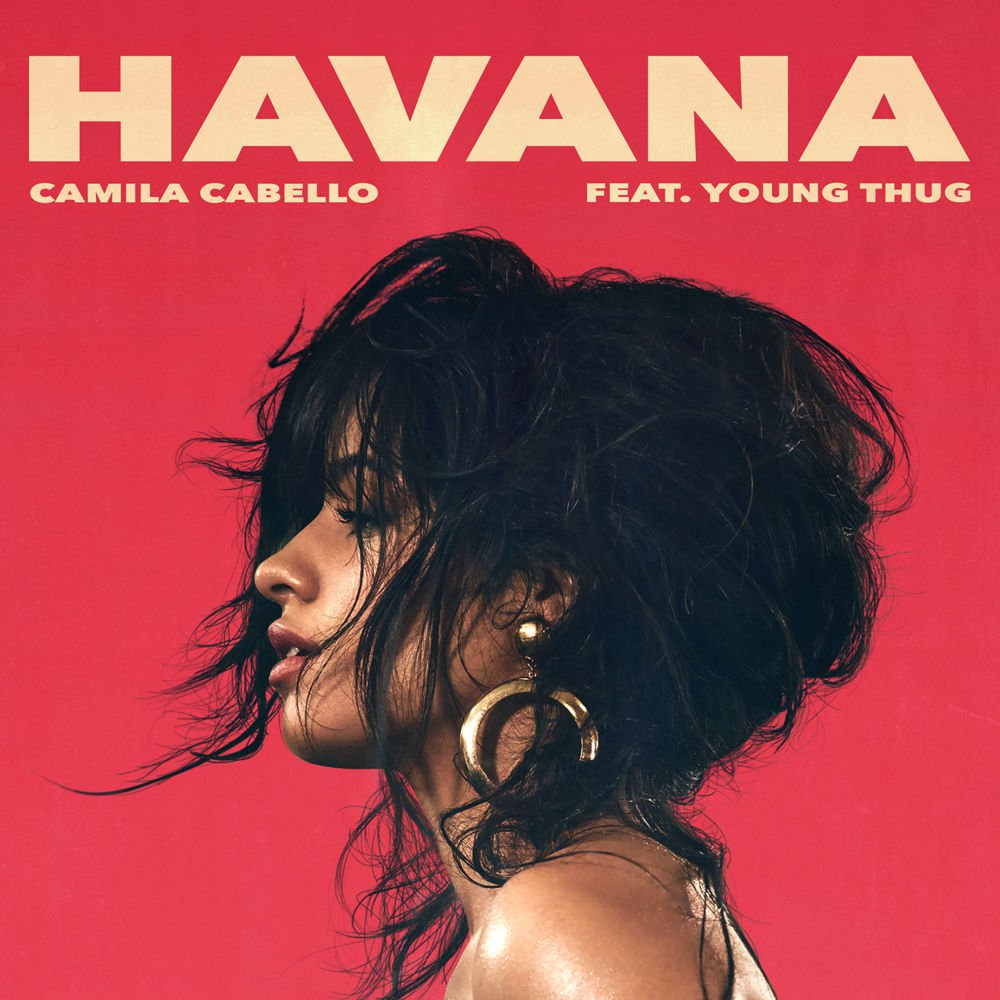
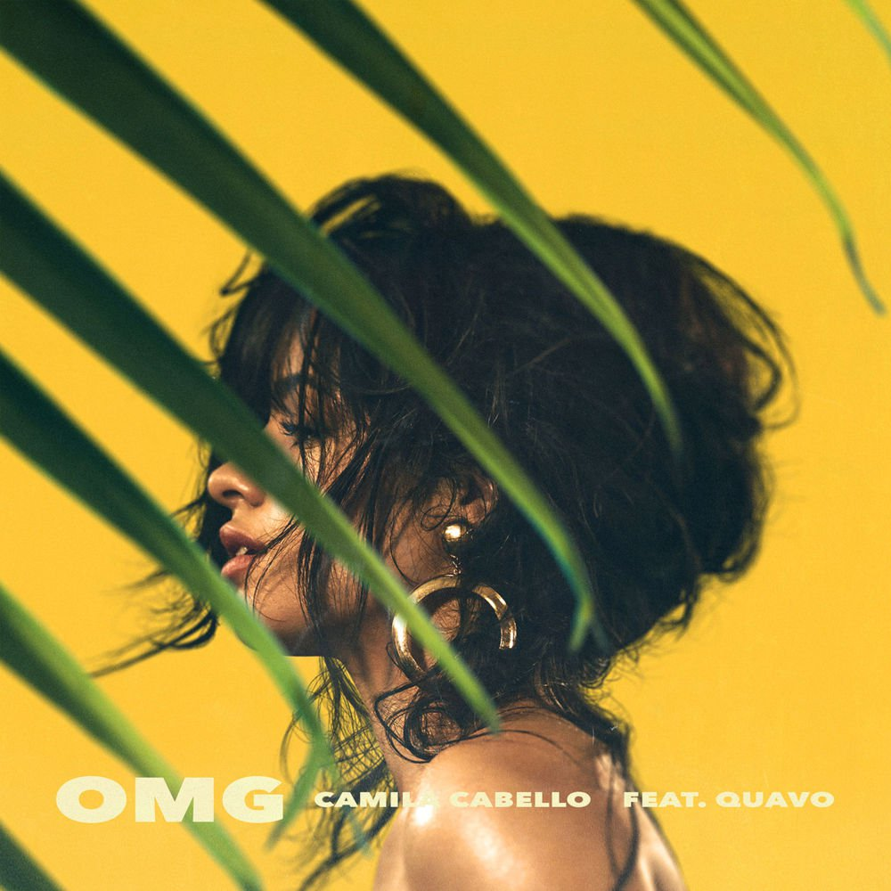

INTEGRANTES: Lauren Jauregui, Dinah Jane Hansen, Normani Kordei, Ally Brooke.
EX INTEGRANTES: Camila Cabello.
Fifth Harmony (en español, Quinta Armonía) es un grupo musical femenino estadounidense que tuvo sus inicios en la segunda temporada del programa The X Factor en el 2012, donde obtuvieron el tercer lugar de la competencia. El grupo está compuesto por Ally Brooke, Normani Kordei, Dinah Jane Hansen, Lauren Jauregui y anteriormente Camila Cabello, cuya salida fue anunciada el 19 de diciembre de 2016. En enero de 2013, firmaron un acuerdo conjunto con Syco Music, propiedad de Simon Cowell, y Epic Records, sello discográfico de LA Reid, después de terminar en tercer lugar en el show. En diciembre de 2016, se informó que todos los miembros del grupo también están firmados individualmente a Epic Records
ALBUMS
BETTER TOGETHER
REFLECTION
7/27
FIFTH HARMONY
CAMILA CABELLO
Karla Camila Cabello Estrabao (Cojímar, Cuba; 3 de marzo de 1997) es una cantante, compositora y modelo cubana conocida por haber sido parte del grupo femenino Fifth Harmony. Cabello y sus compañeras de banda lanzaron un EP y dos álbumes de estudio. Su salida del grupo se anunció el 19 diciembre de 2016. En noviembre de 2015, Cabello lanzó un dúo con el cantante canadiense Shawn Mendes titulado I Know What You Did Last Summer. La canción alcanzó el número 20 en los EE.UU y el número 18 en Canadá y fue certificada platino por la Asociación de Industria Discográfica de Estados Unidos. En octubre de 2016, lanzó un segundo sencillo con el rapero estadounidense Machine Gun Kelly, titulado Bad Things, que alcanzó el número 4 en el Billboard Hot 100 de los Estados Unidos. En mayo del 2017, Cabello lanzó "Crying In The Club" como el sencillo principal de su próximo álbum debut The Hurting. The Healing. The Loving.
COLABORACIONES Y CANCIONES PROPIAS
CRYING IN THE CLUB
I HAVE QUESTIONS

HAVANA

OMG
I KNOW WHAT YOU DID LAST SUMMER - SHAWN MENDES & CAMILA CABELLO
BAD THINGS - MACHINE GUN KELLY & CAMILA CABELLO
LOVE INCREDIBLE - CASHMERE CAT & CAMILA CABELLO
KNOW NO BETTER - MAJOR LAZER & CAMILA CABELLO
SHAWN MENDES
Shawn Peter Raul Mendes (Toronto, 8 de agosto de 1998) es un músico y cantante canadiense, que empezó a ganar notoriedad a mediados de 2013, cuando comenzó a publicar sus interpretaciones de versiones de canciones populares en la aplicación Vine. Al año siguiente, llamó la atención del representante Andrew Gertler y del jefe de A&R de Island Rescords, Ziggy Chareton, quienes lo llevaron a Nueva York a firmar un contrato con el sello discográfico antes mencionado. En 2015, publicó su primer álbum Handwritten, que tuvo éxito en Estados Unidos al entrar en la número 1 del Billboard 200, al igual que su sencillo «Stitches» que ingresó a las diez principales posiciones del Billboard Hot 100 en Estados Unidos y Canadá, y la número uno en la lista de sencillos de Reino Unido.
ALBUMS
THE SHAWN MENDES EP
HANDWRITTEN
ILLUMINATE
DUA LIPA
Dua Lipa (Londres, 22 de agosto de 1995) es una cantante y compositora británica, de ascendencia albanokosovar.
Lipa ascendió a la fama desde el lanzamiento del sencillo «Be the One», a fines de 2015, que tuvo un éxito enorme en Europa, alcanzando la número uno en Bélgica, Polonia y Eslovaquia. Además de situarse entre los diez primeros puestos en más de once países europeos y en Australia. La artista se convirtió eventualmente en una de las revelaciones más populares y obtuvo su primer éxito en su país con «Hotter than Hell» en 2016, que alcanzó el número quince en el listado de sencillos británica. Luego, con «Blow Your Mind (Mwah)» (2016) empezó a ganar popularidad en Norteamérica y le granjeó su primera entrada en la Billboard Hot 100. Dos sencillos más, «No Lie» con Sean Paul y «Scared to Be Lonely» con Martin Garrix, otros rotundos éxitos comerciales y en ránquines, se lanzaron antes de su álbum debut y homónimo, una obra que recibió reseñas generalmente favorables de los críticos e ingresó en la posición cinco en la lista de álbumes británica en junio de 2017.
ALBUM Y COLABORACIONES
DUA LIPA
NO LIE - SEAN PAUL & DUA LIPA
SCARED TO BE LONELY - MARTIN GARRIX & DUA LIPA
NOAH CYRUS
Noah Lindsey Cyrus (Nashville, Tennessee, 8 de enero de 2000) es una actriz y cantante estadounidense. En noviembre de 2016, abrio su carrera como cantante lanzando su primer single "Make Me (Cry)" con la colaboración del cantautor Labrinth, que ya cuenta con videoclip oficial. El 5 de marzo de 2017 hizo una aparición en los iHeart Radio Music Awards 2017, interpretado su single "Make Me (Cry)" junto a Labrinth. Fue introducida por su hermana mayor Miley Cyrus.
Little Mix es un una banda femenina de pop británica formada en 2011 en el programa The X Factor, integrada por Perrie Edwards, Jesy Nelson, Leigh-Anne Pinnock y Jade Thirlwall. Sus integrantes fueron rechazadas como solistas. Originalmente, el grupo se llamaba Rhythmix, pero debido a que ya había una organización caritativa con el mismo nombre, fue cambiado a Little Mix. Durante el programa, el cuartero fue apadrinado por la jueza Tulisa Contostavlos y cantaron diferentes temas como «E.T.» de Katy Perry y «Don't Stop the Music» de Rihanna. En la final, lograron superar a Marcus Collins y ganaron el programa, lo que convirtió a Little Mix en el primer grupo que lo gana, logró que otros grupos de reconocimiento internacional como One Direction y JLS no lograron. Tras esto, lanzaron «Cannonball» como su primer sencillo, una versión de Damien Rice y pudieron alcanzar el número uno en las principales listas del Reino Unido e Irlanda.
ALBUMS MÁS CONOCIDOS
SALUTE
GET WEIRD
GLORY DAYS
JUSTIN BIEBER
Justin Drew Bieber (London, Canadá, 1 de marzo de 1994), más conocido como Justin Bieber, es un cantante y compositor canadiense. En 2008, el ejecutivo de la industria de la música Scooter Braun descubrió a Bieber cuando lo vio accidentalmente en algunos vídeos en YouTube y tiempo después se convirtió en su mánager.7 Braun reunió al cantante con Usher en Atlanta, donde firmó un contrato musical con el sello discográfico de Braun y Usher, Raymond Braun Media Group (RBMG),8 y uno de grabación con Island Records ofrecido por L.A. Reid.
ALBUMS MÁS CONOCIDOS
MY WORLD
BELIEVE
PURPOSE
DNCE
INTEGRANTES: Joe Jonas, Jack Lawless, Cole Whittle, JinJoo Lee.
DNCE es una banda de dance-rock estadounidense que se formó en 2015. El grupo está formado por el ex Jonas Brother, Joe Jonas, también por Jack Lawless, Cole Whittle y JinJoo Lee. El grupo firmó con Republic Records, y lanzaron su primer sencillo Cake by the Ocean en septiembre de 2015. La canción tuvo un éxito moderado en diversos territorios, llegando al puesto 18 de la lista Billboard Hot 100 de los Estados Unidos. Su EP debut, Swaay (2015), recibió una recepción generalmente positiva después del lanzamiento. También recibieron su primera nominación a un premio, por mejor artista nuevo en los Kids' Choice Awards 2016.
ALBUMS
SWAAY
DNCE
HARRY STYLES
Harry Edward Styles (Holmes Chapel, Cheshire, 1 de febrero de 1994), mejor conocido como Harry Styles, es un cantante y compositor británico, actualmente miembro de la boy band One Direction.Tras audicionar en The X Factor y ser aceptado, la jueza Nicole Scherzinger sugirió que Harry formase parte de un grupo llamado One Direction junto con Zayn Malik, Niall Horan, Liam Payne y Louis Tomlinson. La creación del grupo se hizo realidad y los cinco fueron apadrinados por Simon Cowell. La agrupación llegó a la final del programa y quedaron en el tercer lugar. Aunque no ganaron, Cowell pagó un contrato para que firmasen con el sello discográfico Syco.
ALBUM
HARRY STYLES
LOUIS TOMLINSON
Louis William Tomlinson (n. Louis Troy Austin el 24 de diciembre de 1991, Doncaster, Reino Unido) mejor conocido como Louis Tomlinson, es un cantante, compositor y futbolista británico, miembro de la boy band One Direction. Juega en el Doncaster Rovers Football Club en la liga Football League Championship de Inglaterra. Tras audicionar en The X Factor y ser aceptado, la jueza Nicole Scherzinger sugirió que Louis formase parte de un grupo llamado One Direction junto con Harry Styles, Zayn Malik, Liam Payne y Niall Horan. La creación del grupo se hizo realidad y los cinco fueron apadrinados por Simon Cowell. La agrupación llegó a la final del programa y quedaron en el tercer lugar. Aunque no ganaron, Cowell pagó un contrato para que firmasen con el sello discográfico Syco.
COLABORACIONES Y CANCION
JUST HOLD ON
BACK TO YOU
NIALL HORAN
Niall James Horan (Mullingar, Irlanda, 13 de septiembre de 1993) es un cantante y compositor irlandés, conocido por ser integrante de la banda One Direction. Tras participar en el casting de The X Factor y ser aceptado, la juez Nicole Scherzinger sugirió que Niall formase parte de un grupo llamado One Direction junto con Harry Styles, Zayn Malik, Liam Payne y Louis Tomlinson. La creación del grupo se hizo realidad y los cinco fueron apadrinados por Simon Cowell. La agrupación llegó a la final del programa y quedaron en el tercer lugar. Aunque no ganaron, Cowell pagó un contrato para que firmasen con el sello discográfico Syco.
CANCIONES
THIS TOWN
SLOW HANDS
LIAM PAYNE
Liam James Payne (29 de agosto de 1993, Wolverhampton, Reino Unido) es un cantante, compositor y guitarrista británico, actualmente perteneciente a la boy band One Direction.1 Tras audicionar en The X Factor y ser aceptado, la jueza Nicole Scherzinger sugirió que Liam formase parte de un grupo llamado One Direction junto con Harry Styles, Niall Horan, Zayn Malik y Louis Tomlinson. La creación del grupo se hizo realidad y los cinco fueron apadrinados por Simon Cowell. Llegaron a la final del programa y quedaron en el tercer lugar. Aunque no ganaron, Cowell pagó un contrato para que firmasen con el sello discográfico Syco.
CANCION Y COLABORACION
STRIP THAT DOWN
GET LOW - ZEDD & LIAM PAYNE
ZAYN MALIK
Zain Javadd Malik (n. 12 de enero de 1993, Bradford, Reino Unido) más conocido como Zayn, es un cantante y compositor británico, conocido por haber sido miembro de la boy band One Direction. Tras audicionar en The X Factor y ser aceptado, la jueza Nicole Scherzinger sugirió que Zayn formase parte de un grupo llamado One Direction junto con Harry Styles, Niall Horan, Liam Payne y Louis Tomlinson. La creación del grupo se hizo realidad y los cinco fueron apadrinados por Simon Cowell. La agrupación llegó a la final del programa y quedaron en el tercer lugar. Aunque no ganaron, Cowell pagó un contrato para que firmasen con el sello discográfico Syco.
ALBUM Y COLABORACION
MIND OF MINE
I DON'T WANNA LIVE FOREVER - ZAYN MALIK & TAYLOR SWIFT